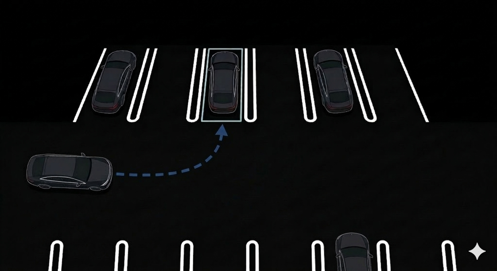
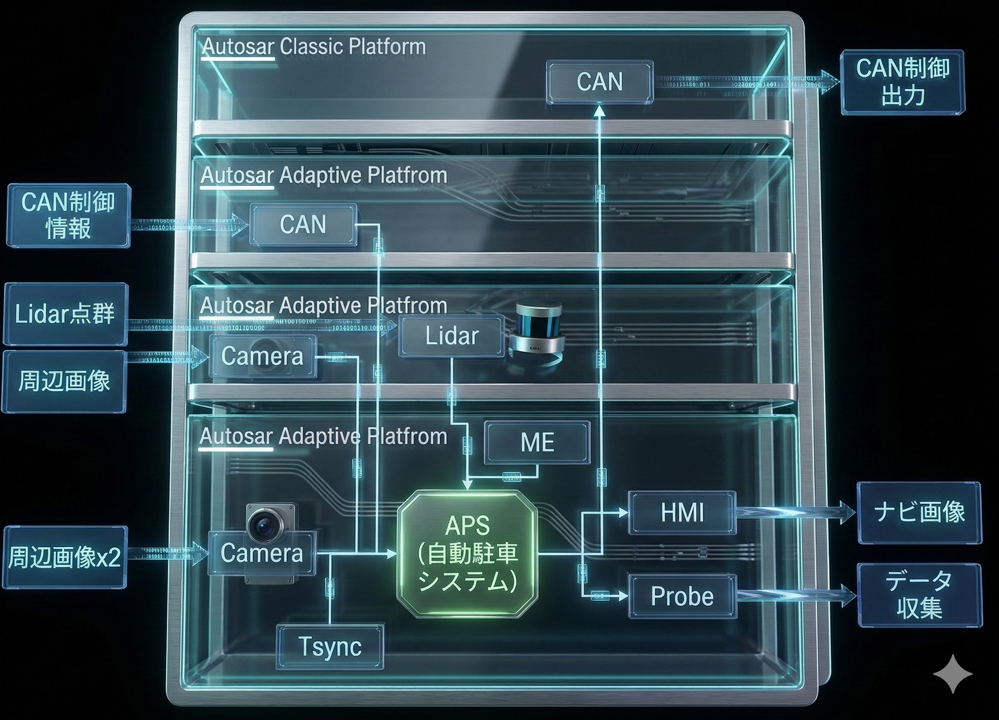
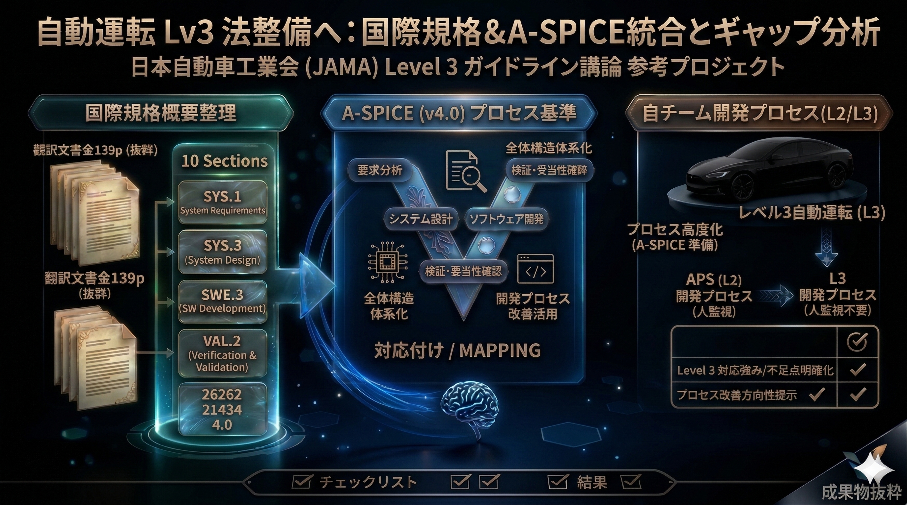
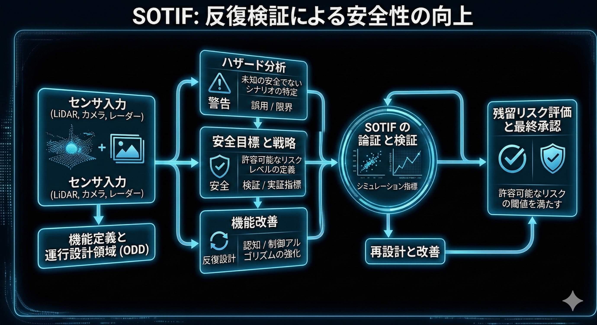
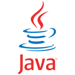
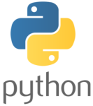
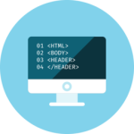
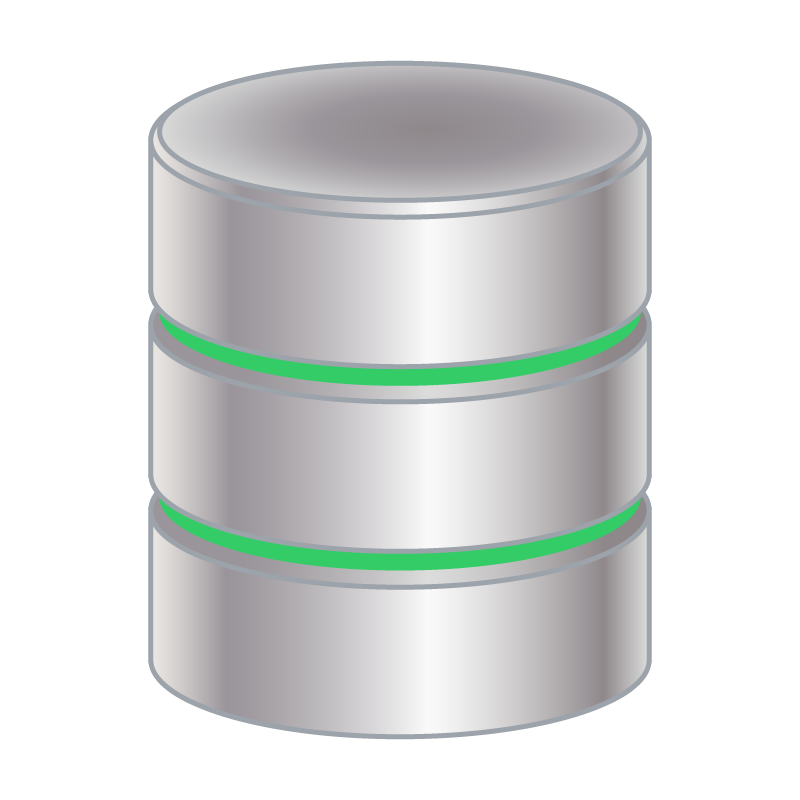
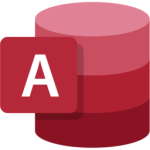

サービスを提供いたします。
WORKS
Auto Parking System機能開発
量産開発 - 自動運転駐車の機能 Auto Parking System(APS)

自動運転車の駐車機能であるAPSソフトウェアの開発に携わりました。
APS機能は、Lidar, 魚眼カメラ, サラウンドビューシステムなどのセンサー情報をもとに、
駐車スペースを検出し、ステアリング・アクセル・ブレーキを自動制御して安全に駐車を完了。
ECU 上で動作する駐車制御機能として実装されており、各種センサから取得した
入力データをもとに周辺環境を認識し、その情報をリアルタイムに演算して車両制御用の
CAN 信号を生成します。 さらに、HMI へは AI モデルを用いて処理した周辺環境の画像や
駐車ガイド情報を出力し、ドライバーに分かりやすい形で駐車状況を提示します
要件定義〜開発〜テスト〜リリースとV字プロセス全体に渡って様々な角度で関わり、
学ぶ機会の豊富な現場でした
Check!
もっと見る

Autosar Classic Platform / Autosar Adaptive Platform を組み合わせた
マルチプラットフォーム構成のECU 開発において、要求仕様の整理から
開発支援、統合、検証まで一連の工程を担当しました。
Classic と Adaptive が混在する複雑な ECU 構成の中で、各プラットフォーム間の連携、
通信仕様の整合性確認、ミドルウェア環境構築、動作検証など幅広い領域に携わり、
車載ソフトウェア開発における実践的な知見を深めることができました。
| 【開発環境/仮想環境】 | WSL（Windows Subsystem for Linux） | python | C++ | Docker | VirtualBox | ||
|---|---|---|---|---|---|---|---|
| 【検証・解析ツール】 | Vector Canape CANoe Canalyzar | IrfanView | YuvViewer | QNX Momentics | QNX software senter | Winmarge | |
| ネットワーク / 通信ツール】 | Wireshark | tcpdump | telnet | ssh | curl | PCAT | WinSCP |
| 【ミドルウェア / OS】 | AUTOSAR Classic Platform | AUTOSAR Adaptive Platform | Windows | Ubuntu | QNX | ||
| 【バージョン管理】 | Git | GitHub | GitLab | SVN | |||
| 【課題管理、問題解決管理 ナレッジ】 | jira | confluence |
国際規格翻訳 A-SPICE プロセス対応付け

国際規格「Guidelines and recommendations for ADS safety requirements, assessments
and test methods to inform regulatory development」）を英語から日本語へ翻訳。
その概要を整理して構造的な理解を促すよう章立てや概念図を用いた資料を作成しました。
その内容は、Level3以上（人監視不要）の自動運転機能を開発する安全性確立プロセスであり、
国際的なODD（運行設計領域）に対応する要求事項が体系的にまとめられています
私はこれらの内容を開発チームが実務で活用できるよう、
・安全要求の抽出
・評価手法の整理
・試験プロセスの流れの可視化
・A-SPICEとの比較
といった観点で再構成し、プロジェクト内で共有可能なナレッジとして文書化しました。
国際規格link（外部サイト）：Guidelines and recommendations for ADS safety requirements, assessments and test methods to inform regulatory development
Check!
もっと見る
🔺 資料抜粋
・専門用語（安全要求、評価手法、ODD など）を国内の自動運転開発文脈に合わせて適切に意訳
・200ページ超の規格内容を章ごとに整理し、理解しやすい構造へ再編成
・Level 3 以上の自動運転システムに必要な安全性確立プロセスを抽出し、要点をまとめた資料を作成
・海外規格との整合性や差分を確認し、開発チームが実務で活用できる形に落とし込み
・複雑な評価手法・試験方法を図解化し、非専門メンバーでも理解できる資料に改善

SOTIF

国際規格
SKILL

Java
簡単な実装が可能
＜フレームワーク＞
Spring boot
Mybatis
Bean Validation
Lombok
＜期間＞
半年以上1年未満
＜Webアプリ開発＞
PC貸出管理アプリを作成する際のメイン言語としました。

Python
簡単な実装が可能
＜フレームワーク＞
Flask
PyQt
scikit-learn
NumPy
Pandas
Matplotlib
＜期間＞
一年以上三年未満
JavaScript
簡単な実装が可能
＜フレームワーク＞
jQuery
React
＜期間＞
1か月以上半年未満
SQL
簡単な実装が可能
＜期間＞
1か月以上半年未満

HTML5/CSS3
基本的な実装が可能
＜期間＞
半年以上1年未満

データベース
簡単な実装が可能
PostgreSQL
MySQL
os
Windows10, 11: 環境設計・構築が可能
mac: 環境設計・構築が可能
Linux: 環境設計・構築が可能

Access
＜資格＞
Microsoft Office Specialist (MOS) Access
Expert (Office 2019)
総合開発環境（IDE）
Visual Studio Code
Jupyter notebook
Eclipse
周辺ツール
ソース管理: GitHub
コミュニケーション: Slack, Teams
スケジュール: Outlook
ドキュメント: Google Docs/SpreadSheet、miro
語学
英語: 日常会話レベル
オーストラリア・シドニーにて就業経験あり